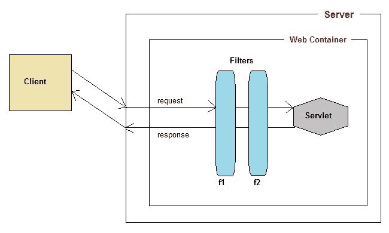
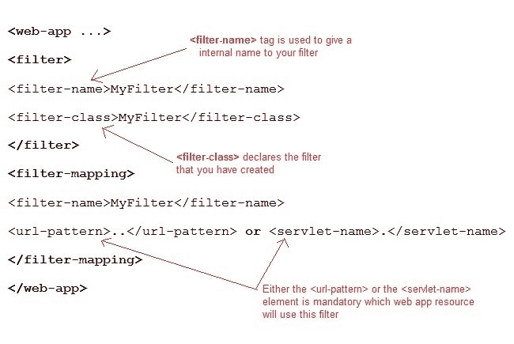
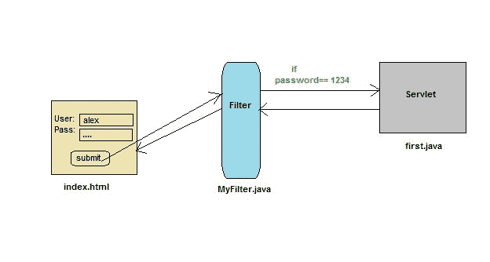

Servlet：过滤器 API 简介
过滤器是您可以使用和配置来执行一些过滤任务的组件。过滤器用于请求的预处理和响应的后处理。您可以使用任意数量的过滤器对请求进行预处理，对响应进行后处理。过滤器在 web 应用的部署描述符中配置。

Servlet:过滤器是如何工作的？
- 当请求到达网络容器时，它会检查是否有任何过滤器具有与请求的网址相匹配的网址模式。
- 网络容器使用匹配的网址模式定位第一个过滤器，并执行过滤器的代码。
- 如果另一个过滤器有匹配的网址模式，那么它的代码就会被执行。这种情况一直持续到没有匹配网址模式的过滤器。
- 如果没有错误发生，请求将传递给目标 servlet。因此，我们知道，只有当所有相关的过滤器成功执行时，请求才会被传递给目标 servlet。
- servlet 将响应返回给调用者。应用于请求的最后一个筛选器是应用于响应的第一个筛选器。
- 最后，响应将被传递到网络容器，该容器将其传递给客户端。
Servlet:关于过滤器 API 的更多信息
过滤 API 是 Servlet API 的一部分。过滤器接口在 javax.servlet 包中找到。
为了创建过滤器，我们必须实现过滤器接口。过滤器接口为过滤器提供了以下生命周期方法:
- void
init(FilterConfig filterConfig):由 web 容器调用，向过滤器指示它正在投入使用。 - voiddoFilter(servlet request，ServletResponse response，FilterChain chain) :由于客户端请求链末端的资源，每次请求/响应对通过链时，由容器调用。
- void
destroy():由 web 容器调用，向过滤器指示它正在停止服务。
Servlet:什么是 FilterChain 接口？
FilterChain 对象用于调用链中的下一个过滤器，或者如果调用过滤器是链中的最后一个过滤器，则调用链末端的 rosource。过滤器链末端的资源可以是目标 Servlet(在请求流的情况下)或客户机(在响应流的情况下)，如上图所示。
在部署描述符中声明一个 Servlet 过滤器

演示 Servlet 过滤器使用的示例
在本例中，我们使用过滤器进行身份验证(检查正确的用户名和密码)。这里index.html会向用户询问用户名和密码，我的过滤器会验证用户输入的密码，如果用户输入了“1234”作为密码，那么他会先被转发到的 servlet，否则 index.html 会再次显示给用户。
这正是我们之前使用两个 servlet 类所做的，一个用于验证，另一个用于欢迎用户。现在我们将插入一个过滤器来验证用户。

index.html
<form method="post" action="first">
Name:<input type="text" name="user" /><br/>
Password:<input type="text" name="pass" /><br/>
<input type="submit" value="submit" />
</form>
web.xml
<web-app..>
<filter>
<filter-name>MyFilter</filter-name>
<filter-class>MyFilter</filter-class>
</filter>
<filter-mapping>
<filter-name>MyFilter</filter-name>
<servlet-name>first</servlet-name>
</filter-mapping>
<servlet>
<servlet-name>first</servlet-name>
<servlet-class>first</servlet-class>
</servlet>
<servlet-mapping>
<servlet-name>first</servlet-name>
<url-pattern>/first</url-pattern>
</servlet-mapping>
<welcome-file-list>
<welcome-file>index.html</welcome-file>
</welcome-file-list>
</web-app>
MyFilter.java
import java.io.*;
import javax.servlet.*;
import javax.servlet.http.*;
public class MyFilter implements Filter {
public void init(FilterConfig fc) throws ServletException {}
public void doFilter(ServletRequest request, ServletResponse response,
FilterChain chain) throws IOException, ServletException {
PrintWriter out = response.getWriter();
String pass = request.getParameter("pass");
if(pass.equals("1234"))
{
chain.doFilter(request, response);
}
else
{
out.println("You have enter a wrong password");
RequestDispatcher rs = request.getRequestDispatcher("index.html");
rs.include(request, response);
}
}
public void destroy() { }
}
first.java
import java.io.*;
import javax.servlet.*;
import javax.servlet.http.*;
public class first extends HttpServlet {
protected void doPost(HttpServletRequest request, HttpServletResponse response)
throws ServletException, IOException
{
response.setContentType("text/html;charset=UTF-8");
PrintWriter out = response.getWriter();
String user = request.getParameter("user");
out.println("Wellcome " + user);
}
}